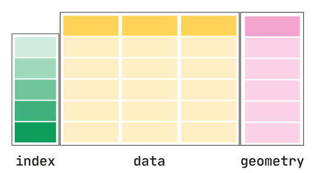

4.3 geopandas#
Lesson Content
geopandasvs.pandasspatial data operations
reprojecting to meters
filtering a geodataframe by a vector
Context#
🐼➕🌐 = 🚀🎉❤️
We’ve used pandas to help us get the most out of our csv and excel data. We talked yesterday about how spatial data is stored and organized. Today we combine both worlds with geopandas, an extenions of pandas specific to spatial data.
Just like how we saw that converting datetime strings to Python datetime objects, converting our latitudes and longitudes to points allows us to use a world more of spatial data analysis techniques. It’s so exciting!
geopandas#
GeoPandas is an extension of Pandas. GeoDataFrames have the same row, column structure with indexes that are accessed in the same way as Pandas. The difference is that they also have a geometry column.

Let’s look at an example geodataframe that comes pre-loaded on geopandas.
import geopandas as gpd
# gpd.read_file(gpd.datasets.get_path('naturalearth_lowres'))
What is the data type of the geometry column? It’s shapely objects! They are Polygons, like we say yesterday in the Spatial Data lecture.
Converting our pandas dataframe to a GeoDataFrame#
geodataframe = pandas dataframe + geometry column of shapely objects
import pandas as pd
import geopandas as gpd
import numpy as np
# This line shortens the output
pd.set_option('display.max_rows', 10)
pd.set_option('display.max_columns', 8)
This dataset holds data from the firex campaign. We will be using just a few columns for this lesson.
firex_filepath = "./data/Copy of SARP 2009 to 2020 sent to Alex with plotting.xlsx"
firex = pd.read_excel(firex_filepath, 'data')
firex = firex[['Can#', 'Jday', 'Latitude', 'Longitude', 'State', 'CH4 (ppmv)',
'CO (ppbv)', 'CO2_ppm', 'OCS (MS)', 'DMS (MS)']].iloc[:4490]
firex
| Can# | Jday | Latitude | Longitude | ... | CO (ppbv) | CO2_ppm | OCS (MS) | DMS (MS) | |
|---|---|---|---|---|---|---|---|---|---|
| 0 | 8198 | 202.0 | 35.000000 | -118.943333 | ... | -999.0 | -999.0 | 518.0 | -888.0 |
| 1 | 7167 | 202.0 | 35.081667 | -119.101000 | ... | -999.0 | -999.0 | 519.0 | -888.0 |
| 2 | 6354 | 202.0 | 35.170000 | -119.233333 | ... | -999.0 | -999.0 | 495.0 | 14.0 |
| 3 | 7226 | 202.0 | 35.346667 | -119.381667 | ... | -999.0 | -999.0 | 505.0 | 11.9 |
| 4 | 6269 | 202.0 | 35.438333 | -119.433333 | ... | -999.0 | -999.0 | 487.0 | 17.4 |
| ... | ... | ... | ... | ... | ... | ... | ... | ... | ... |
| 4485 | 5090 | NaN | 29.717200 | -95.341600 | ... | -999.0 | -999.0 | 553.0 | 4.0 |
| 4486 | 5028 | NaN | 29.717200 | -95.341600 | ... | -999.0 | -999.0 | 528.0 | 5.5 |
| 4487 | 5017 | NaN | 29.717200 | -95.341600 | ... | -999.0 | -999.0 | 583.0 | 8.6 |
| 4488 | 5091 | NaN | 29.717200 | -95.341600 | ... | -999.0 | -999.0 | 534.0 | 3.9 |
| 4489 | 5046 | NaN | 29.717200 | -95.341600 | ... | -999.0 | -999.0 | 530.0 | 9.1 |
4490 rows × 10 columns
# Drop columns where Latitude or Longitude are nan
firex = firex[firex['Longitude'].notna()]
# Replace both nan values with np.nan
firex = firex.replace({-999: np.nan, -888: np.nan})
If you have string latitude and longitude columns (as in this dataframe) there is a function prebuilt for that common case: gpd.points_from_xy()
gpd.points_from_xy(firex['Longitude'], firex['Latitude'])
<GeometryArray>
[ <POINT (-118.943 35)>, <POINT (-119.101 35.082)>,
<POINT (-119.233 35.17)>, <POINT (-119.382 35.347)>,
<POINT (-119.433 35.438)>, <POINT (-119.433 35.567)>,
<POINT (-119.442 35.657)>, <POINT (-119.45 35.757)>,
<POINT (-119.457 35.857)>, <POINT (-119.45 35.958)>,
...
<POINT (-95.342 29.717)>, <POINT (-95.342 29.717)>,
<POINT (-95.342 29.717)>, <POINT (-95.342 29.717)>,
<POINT (-95.342 29.717)>, <POINT (-95.342 29.717)>,
<POINT (-95.342 29.717)>, <POINT (-95.342 29.717)>,
<POINT (-95.342 29.717)>, <POINT (-95.342 29.717)>]
Length: 4405, dtype: geometry
geoFIREX = gpd.GeoDataFrame(
firex, geometry=gpd.points_from_xy(firex['Longitude'], firex['Latitude']),
crs='epsg:4326')
geoFIREX
| Can# | Jday | Latitude | Longitude | ... | CO2_ppm | OCS (MS) | DMS (MS) | geometry | |
|---|---|---|---|---|---|---|---|---|---|
| 0 | 8198 | 202.0 | 35.000000 | -118.943333 | ... | NaN | 518.0 | NaN | POINT (-118.94333 35) |
| 1 | 7167 | 202.0 | 35.081667 | -119.101000 | ... | NaN | 519.0 | NaN | POINT (-119.101 35.08167) |
| 2 | 6354 | 202.0 | 35.170000 | -119.233333 | ... | NaN | 495.0 | 14.0 | POINT (-119.23333 35.17) |
| 3 | 7226 | 202.0 | 35.346667 | -119.381667 | ... | NaN | 505.0 | 11.9 | POINT (-119.38167 35.34667) |
| 4 | 6269 | 202.0 | 35.438333 | -119.433333 | ... | NaN | 487.0 | 17.4 | POINT (-119.43333 35.43833) |
| ... | ... | ... | ... | ... | ... | ... | ... | ... | ... |
| 4485 | 5090 | NaN | 29.717200 | -95.341600 | ... | NaN | 553.0 | 4.0 | POINT (-95.3416 29.7172) |
| 4486 | 5028 | NaN | 29.717200 | -95.341600 | ... | NaN | 528.0 | 5.5 | POINT (-95.3416 29.7172) |
| 4487 | 5017 | NaN | 29.717200 | -95.341600 | ... | NaN | 583.0 | 8.6 | POINT (-95.3416 29.7172) |
| 4488 | 5091 | NaN | 29.717200 | -95.341600 | ... | NaN | 534.0 | 3.9 | POINT (-95.3416 29.7172) |
| 4489 | 5046 | NaN | 29.717200 | -95.341600 | ... | NaN | 530.0 | 9.1 | POINT (-95.3416 29.7172) |
4405 rows × 11 columns
📝 Check your understanding
What is the datatype of the geometry column?
A) integer
B) datetime
C) float
D) shapely Point
E) list
Spatial data operations#
By using shapely points we get the advantages of spatial operations built into our DataFrame.
Example question: How far are all of my data points from Mt. St. Helens?
from shapely.geometry import Point
mt_st_helens = Point(-122.1956, 46.1914)
geoFIREX['geometry'].distance(mt_st_helens)
/var/folders/nb/y7dp0ct55_58hrhrhlz5vbkm0000gn/T/ipykernel_6278/3190452269.py:1: UserWarning: Geometry is in a geographic CRS. Results from 'distance' are likely incorrect. Use 'GeoSeries.to_crs()' to re-project geometries to a projected CRS before this operation.
geoFIREX['geometry'].distance(mt_st_helens)
0 11.654384
1 11.532681
2 11.412549
3 11.203859
4 11.102187
...
4485 31.504549
4486 31.504549
4487 31.504549
4488 31.504549
4489 31.504549
Length: 4405, dtype: float64
Reprojecting to meters#
Reprojecting a GeoDataFrame is really smooth, it only takes one .to_crs() method. The only thing to be careful of is to make sure first that you have a crs set for your dataframe. If you don’t and your points are in lat/lon then EPSG:4326 is the CRS you should give it.
# Set the CRS, if you didn't do it when you read in the data
geoFIREX = geoFIREX.set_crs(epsg=4326)
print(geoFIREX.crs)
EPSG:4326
geoFIREX['geometry']
0 POINT (-118.94333 35)
1 POINT (-119.101 35.08167)
2 POINT (-119.23333 35.17)
3 POINT (-119.38167 35.34667)
4 POINT (-119.43333 35.43833)
...
4485 POINT (-95.3416 29.7172)
4486 POINT (-95.3416 29.7172)
4487 POINT (-95.3416 29.7172)
4488 POINT (-95.3416 29.7172)
4489 POINT (-95.3416 29.7172)
Name: geometry, Length: 4405, dtype: geometry
geoFIREXprojcrs = geoFIREX.to_crs(epsg=3857)
geoFIREXprojcrs['geometry'].distance(mt_st_helens) / 1000
0 13879.867483
1 13899.942512
2 13917.606473
3 13940.611137
4 13949.878850
...
4485 11165.245602
4486 11165.245602
4487 11165.245602
4488 11165.245602
4489 11165.245602
Length: 4405, dtype: float64
📝 Check your understanding
Define a shapely point that represents the SARP Conference room. Calculate the distance from the SARP conference room to each point in the FIREX dataset.
📝 Check your understanding
Say I run the block of code geoFIREX.to_crs(epsg=3857) and get the following error:
ValueError: Cannot transform naive geometries. Please set a crs on the object first.
What is likely my problem?
Quick Plots#
One great feature of the geodataframes is that they have a .plot() method that can be used to view the general distribution of data.
geoFIREX.plot()
<Axes: >
You can use matplotlib arguments to begin to modify your graph.
geoFIREX.plot(column='CO2_ppm', legend=True, vmax=480)
<Axes: >
Another built-in method for viewing data is .explore(). In order to use .explore() the dataframe must have a CRS set. For more features with the .explore() method check out the geopandas user guide. You can see the available basemaps on the docs page for .explore() under the tiles argument.
geoFIREX.explore(tiles="OpenStreetMap")
# And example of using a different basemap
# geoFIREX.explore(tiles="http://c.tile.stamen.com/watercolor/{z}/{x}/{y}.jpg", attr="Stamen Watercolor")
---------------------------------------------------------------------------
KeyboardInterrupt Traceback (most recent call last)
Cell In[20], line 1
----> 1 geoFIREX.explore(tiles="OpenStreetMap")
2 # And example of using a different basemap
3 # geoFIREX.explore(tiles="http://c.tile.stamen.com/watercolor/{z}/{x}/{y}.jpg", attr="Stamen Watercolor")
File ~/miniconda3/envs/sarp/lib/python3.13/site-packages/geopandas/geodataframe.py:2305, in GeoDataFrame.explore(self, *args, **kwargs)
2303 @doc(_explore)
2304 def explore(self, *args, **kwargs):
-> 2305 return _explore(self, *args, **kwargs)
File ~/miniconda3/envs/sarp/lib/python3.13/site-packages/geopandas/explore.py:289, in _explore(df, column, cmap, color, m, tiles, attr, tooltip, popup, highlight, categorical, legend, scheme, k, vmin, vmax, width, height, categories, classification_kwds, control_scale, marker_type, marker_kwds, style_kwds, highlight_kwds, missing_kwds, tooltip_kwds, popup_kwds, legend_kwds, map_kwds, **kwargs)
287 import matplotlib
288 import matplotlib.pyplot as plt
--> 289 from mapclassify import classify
290 from matplotlib import colors
292 # isolate MPL version - GH#2596
File ~/miniconda3/envs/sarp/lib/python3.13/site-packages/mapclassify/__init__.py:4
1 import contextlib
2 from importlib.metadata import PackageNotFoundError, version
----> 4 from . import util
5 from ._classify_API import classify
6 from .classifiers import (
7 CLASSIFIERS,
8 BoxPlot,
(...)
26 load_example,
27 )
File ~/miniconda3/envs/sarp/lib/python3.13/site-packages/mapclassify/util.py:3
1 import numpy as np
----> 3 from ._classify_API import classify as _classify
6 def get_color_array(
7 values,
8 scheme="quantiles",
(...)
13 **kwargs,
14 ):
15 """Convert array of values into RGBA or hex colors using a colormap and classifier.
16 This function is useful for visualization libraries that require users to provide
17 an array of colors for each object (like pydeck or lonboard) but can also be used
(...)
45
46 """
File ~/miniconda3/envs/sarp/lib/python3.13/site-packages/mapclassify/_classify_API.py:1
----> 1 from .classifiers import (
2 BoxPlot,
3 EqualInterval,
4 FisherJenks,
5 FisherJenksSampled,
6 HeadTailBreaks,
7 JenksCaspall,
8 JenksCaspallForced,
9 JenksCaspallSampled,
10 MaximumBreaks,
11 MaxP,
12 NaturalBreaks,
13 Percentiles,
14 PrettyBreaks,
15 Quantiles,
16 StdMean,
17 UserDefined,
18 )
20 __author__ = "Stefanie Lumnitz <stefanie.lumitz@gmail.com>"
23 _classifiers = {
24 "boxplot": BoxPlot,
25 "equalinterval": EqualInterval,
(...)
39 "userdefined": UserDefined,
40 }
File ~/miniconda3/envs/sarp/lib/python3.13/site-packages/mapclassify/classifiers.py:11
9 import numpy as np
10 import scipy.stats as stats
---> 11 from sklearn.cluster import KMeans
13 __author__ = "Sergio J. Rey"
15 __all__ = [
16 "MapClassifier",
17 "quantile",
(...)
36 "CLASSIFIERS",
37 ]
File ~/miniconda3/envs/sarp/lib/python3.13/site-packages/sklearn/cluster/__init__.py:6
1 """Popular unsupervised clustering algorithms."""
3 # Authors: The scikit-learn developers
4 # SPDX-License-Identifier: BSD-3-Clause
----> 6 from ._affinity_propagation import AffinityPropagation, affinity_propagation
7 from ._agglomerative import (
8 AgglomerativeClustering,
9 FeatureAgglomeration,
10 linkage_tree,
11 ward_tree,
12 )
13 from ._bicluster import SpectralBiclustering, SpectralCoclustering
File ~/miniconda3/envs/sarp/lib/python3.13/site-packages/sklearn/cluster/_affinity_propagation.py:14
12 from ..base import BaseEstimator, ClusterMixin, _fit_context
13 from ..exceptions import ConvergenceWarning
---> 14 from ..metrics import euclidean_distances, pairwise_distances_argmin
15 from ..utils import check_random_state
16 from ..utils._param_validation import Interval, StrOptions, validate_params
File ~/miniconda3/envs/sarp/lib/python3.13/site-packages/sklearn/metrics/__init__.py:6
1 """Score functions, performance metrics, pairwise metrics and distance computations."""
3 # Authors: The scikit-learn developers
4 # SPDX-License-Identifier: BSD-3-Clause
----> 6 from . import cluster
7 from ._classification import (
8 accuracy_score,
9 balanced_accuracy_score,
(...)
27 zero_one_loss,
28 )
29 from ._dist_metrics import DistanceMetric
File ~/miniconda3/envs/sarp/lib/python3.13/site-packages/sklearn/metrics/cluster/__init__.py:28
11 from ._bicluster import consensus_score
12 from ._supervised import (
13 adjusted_mutual_info_score,
14 adjusted_rand_score,
(...)
26 v_measure_score,
27 )
---> 28 from ._unsupervised import (
29 calinski_harabasz_score,
30 davies_bouldin_score,
31 silhouette_samples,
32 silhouette_score,
33 )
35 __all__ = [
36 "adjusted_mutual_info_score",
37 "normalized_mutual_info_score",
(...)
54 "consensus_score",
55 ]
File ~/miniconda3/envs/sarp/lib/python3.13/site-packages/sklearn/metrics/cluster/_unsupervised.py:21
15 from ...utils._array_api import _atol_for_type
16 from ...utils._param_validation import (
17 Interval,
18 StrOptions,
19 validate_params,
20 )
---> 21 from ..pairwise import _VALID_METRICS, pairwise_distances, pairwise_distances_chunked
24 def check_number_of_labels(n_labels, n_samples):
25 """Check that number of labels are valid.
26
27 Parameters
(...)
33 Number of samples.
34 """
File ~/miniconda3/envs/sarp/lib/python3.13/site-packages/sklearn/metrics/pairwise.py:46
44 from ..utils.parallel import Parallel, delayed
45 from ..utils.validation import _num_samples, check_non_negative
---> 46 from ._pairwise_distances_reduction import ArgKmin
47 from ._pairwise_fast import _chi2_kernel_fast, _sparse_manhattan
50 # Utility Functions
File ~/miniconda3/envs/sarp/lib/python3.13/site-packages/sklearn/metrics/_pairwise_distances_reduction/__init__.py:97
1 # Authors: The scikit-learn developers
2 # SPDX-License-Identifier: BSD-3-Clause
3
(...)
94 # (see :class:`MiddleTermComputer{32,64}`).
95 #
---> 97 from ._dispatcher import (
98 ArgKmin,
99 ArgKminClassMode,
100 BaseDistancesReductionDispatcher,
101 RadiusNeighbors,
102 RadiusNeighborsClassMode,
103 sqeuclidean_row_norms,
104 )
106 __all__ = [
107 "BaseDistancesReductionDispatcher",
108 "ArgKmin",
(...)
112 "sqeuclidean_row_norms",
113 ]
115 # ruff: noqa: E501
File ~/miniconda3/envs/sarp/lib/python3.13/site-packages/sklearn/metrics/_pairwise_distances_reduction/_dispatcher.py:16
10 from ... import get_config
11 from .._dist_metrics import (
12 BOOL_METRICS,
13 METRIC_MAPPING64,
14 DistanceMetric,
15 )
---> 16 from ._argkmin import (
17 ArgKmin32,
18 ArgKmin64,
19 )
20 from ._argkmin_classmode import (
21 ArgKminClassMode32,
22 ArgKminClassMode64,
23 )
24 from ._base import _sqeuclidean_row_norms32, _sqeuclidean_row_norms64
File sklearn/metrics/_pairwise_distances_reduction/_argkmin.pyx:1, in init sklearn.metrics._pairwise_distances_reduction._argkmin()
File sklearn/metrics/_pairwise_distances_reduction/_base.pyx:1, in init sklearn.metrics._pairwise_distances_reduction._base()
File <frozen importlib._bootstrap>:645, in parent(self)
KeyboardInterrupt:
Filtering a geodataframe by a vector#
Let’s say we want to know how many measurements were taken within 150 km of mt. st. helens. We start with our mt. st. helens point and then we buffer it.
# convert our mt st helens 4326 point to 3857
from pyproj import Transformer
from shapely.ops import transform
uc_irvine = Point(-117.835, 33.644)
t = Transformer.from_crs('epsg:4326', 'epsg:3857', always_xy=True).transform
uc_irvine_projcrs = transform(t, uc_irvine)
# Buffer the point
buff_uc_irvine = uc_irvine_projcrs.buffer(10000)
geoFIREXprojcrs['geometry'].intersects(buff_uc_irvine)
0 False
1 False
2 False
3 False
4 False
...
4485 False
4486 False
4487 False
4488 False
4489 False
Length: 4405, dtype: bool
# Notice that we indexed one dataframe by a different dataframe
geoFIREX[geoFIREXprojcrs['geometry'].intersects(buff_uc_irvine)]
| Can# | Jday | Latitude | Longitude | ... | CO2_ppm | OCS (MS) | DMS (MS) | geometry | |
|---|---|---|---|---|---|---|---|---|---|
| 1779 | 9068 | 174.0 | 33.667200 | -117.847000 | ... | 409.0 | 570.0 | NaN | POINT (-117.847 33.6672) |
| 2206 | 6343 | 177.0 | 33.615195 | -117.784866 | ... | 414.0 | 593.0 | 0.5 | POINT (-117.78487 33.61519) |
| 2234 | 9309 | 177.0 | 33.640604 | -117.806361 | ... | 419.0 | 572.0 | NaN | POINT (-117.80636 33.6406) |
3 rows × 11 columns
📝 Check your understanding
What is the following code doing?
palmdale = Point(-118.075, 34.61)
t = Transformer.from_crs('epsg:4326', 'epsg:3857', always_xy=True).transform
palmdale_projcrs = transform(t, palmdale)
A) Converting a DataFrame called palmdale into a projected CRS
B) Converting a DataFrame called palmdale into a geographic CRS
C) Converting a Point called palmdale into a projected CRS
D) Converting a Point called palmdale into a geographic CRS
E) Intersecting the palmdale objet with the object t
📝 Check your understanding
I want to buffer the mt_st_helens point by 10000m. What is the problem with the following code I’ve written below to do that?
Point(-122.1956, 46.1914).buffer(10000)